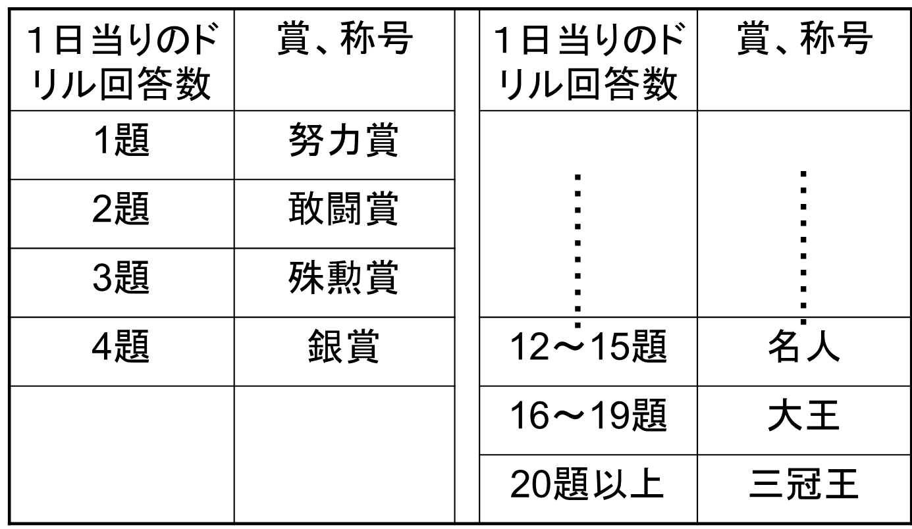

私は友人的父親。その中身（その1）
- 2～3才の頃
勿論“安全”には細心の注意をはらいます。

ご注意：私は米国で人命救助クラブに所属しました。
水泳には思わぬ事故が伴うので、万全の注意が必要です！！！
友人的父親。その中身（その2）
【幼児～小学低学年】ぶらさがり健康器で鉄棒の練習をしました。
勿論、事故を防ぐため細心の注意が必要です。

ご注意：これも危険と紙一重。
私は鉄棒についての知識が十分にありました。
万全の注意が必要です！！！
友人的父親。その中身（その3）
【幼稚園 → 高校三年生】- 天気の良い日、野球のボール、サッカーボールでのキャッチボール。
- 毎日、すもうをとる。６畳の部屋から相手を押し出すと勝ち。投げ技は禁じ手。（相手は180cmに近い水泳部員。息子が高三になったときはかなりきつくなりました）
- 日頃の仕事の息抜き。気分転換。肩ほぐしにも満点の効果です。
友人的父親が心がけた教育四原則
- “基本重視”は教育の極意
- “繰り返し、繰り返し、繰り返し・・・ この中に喜びを見出させる”は教育の極意
- “褒めて伸ばす”は教育の極意
- “すなおな心をまづ育てる”は教育の極意
私も息子も確かめ、肌で感じることができます。
勉強もスポーツも同じという確信を得ることができるでしょう。
社長になった息子の受験時代感想文（Ⅰ）
大事なのは次のステージでどう生きるか」2010/02/23.
- “高校の成績は悪くなかったんですが、府立高校だったので、私立より授業の進度が遅かった。（高３の）１０月に受けた模試は、最低ランクの判定で、厳しい内容でした。そのとき父から「とにかく基本を固めろ。それが大事だ」とアドバイスをもらったんです。わりと素直に受け入れて、教科書や学校でもらった参考書を中心に勉強しました。
- 基本ができないうちから、焦って難しい問題集を取組む必要はないんじゃないかな。僕も無理に背伸びをして難しい問題を解いていたら、たぶん実力はつかなかった。基本的な問題を繰り返し解くこと、それも解き方を覚えるのではなく、きちんと考えながら解いていくことで、自然に応用力がつくと思います。“
社長になった息子の感想文を読んで（Ⅰ）
社長になった息子が書いた短い感想文の中に“基本”、“素直”、“繰り返し”のキーワードが散りばめられています！私は、
“素直な心を育てること”
“繰り返し、繰り返し、繰り返し・・・この中に喜びを見出させること”
を教育の極意と考えて、努めてきたのでしたが、息子の感想文を読んでしっかり報われます。息子から私への文章によるご褒美、私にとって最高の大切な“宝物”です。
社長になった息子の感想文を読んで（Ⅱ）
息子の書いた感想文の中に、- 「基本的な問題を繰り返し解くこと、それも解き方を覚えるのではなく、きちんと考えながら解いていくことで、自然に応用力がつくと思います」
とありますが、大切な点が指摘されていると思います。
- もともと“学習”という言葉には、“学んで，ときに習う。また楽しからずや”という意味が含まれています。繰り返し、繰り返し同じことをするのだけれど、その度に今まで気づかなかった新しい発見がある！大きな喜びがある！これが“繰り返し力”つまり繰り返し、繰り返し同じことをすることができる能力の源泉となるのです。
- この意味での“繰り返し力”，これこそがあらゆるパワーの源泉です。
子供達は絵本を繰り返し繰り返し新しい夢を見ながら読みます。新しい夢を見ることができるかぎり，絵本をとり換える必要はないでしょう。
- 子供達からの“これ読んで！”というおねだりの言葉はまだまだ新しい夢、喜びを与える本であることを主張しています。一冊の絵本に毎回新しい夢、新しい喜びを見出すことができる能力，このことが繰り返し力を磨き上げ，育ててくれます。
これは私の終生変わらぬ哲学です。
Ｍ氏（現在О大学の先生）の文章を紹介しましょう（私は大学では、ほめごろしの友人的先生だったかもしれません）
先生はディスカッション毎に 「うん、面白い。絶対いける。すばらしい アイデアだ！」と上手にやる気を引き出させてくださいますので、暗号研究の面白さにのめりこんでいけたと思います。
先生はやる気を引き出し、その気にさせる名人であります。（この技はＹ（現在Ｎ大学の先生）くんによって「ほめごろし（この場合、良い意味）」と命名されています。）
私は手品が好きで、同期のＮ（現在（株）Ｈの技術者）くんと二人で素人手品を先生に披露させていただきました。先生にはよく「不思議やね。素晴らしい！」と大絶賛していただき、大変嬉しく、いい気分になっていました。今から思うと、私が先生をだましたつもりでしたが、その実、こちらが「ほめごろし」マジックにかかっていたのかも知れません。
友人的父親が心がけた子供へのごほうび。
それは言葉と文章によるご褒美です。

金銭、物品のごほうび、絶対に御法度です。
息子から私へのごほうび
算数ドリルを１題でもとけば“わっ努力賞だ！”とほめてあげて、ノートに努力賞と書いてあげます。頑張って沢山解いたときには“名人”、“大王”、“三冠王”などと書いてあげると小躍りして喜んでくれます。こんな嬉しいことはないという喜び方です。これがまた、沢山の答え合わせに苦労した私が受け取る最高のごほうびなのです。
社長になった息子の読書感想文（Ⅰ）
上記『読書日記』の中に、算数ドリルのことが書いてあります。記事を抜粋して紹介させていただきましょう。
息子が『１６歳の教科書』を読んだときの感想文：
“「何のための勉強か」を学ぶ”
の中に、この算数ドリルのことが書かれていますので紹介しましょう。
子どものころ、父から算数を教えてもらっていた。「算数が基本だから」が口癖で、ドリルを解いて、父が答え合わせをしてくれた。算数や数学とは、真実を見抜く力である。あるいは、空間の把握や発見力といった「見える力」、論理力や要約力といった「詰める力」を養えるものである。先日、『１６歳の教科書』（講談社）を読んでいたら、そんなことが書いてあった。父も、これに近いことを言っていたと思う。
読書感想文（つづき）
本書は、「そもそも何のために勉強するのか？」ということを説いた本だ。大人になった今、読んでみても、自分が何のために勉強していたのかがよく分かる。 確かに、数学・勉強に限らず、子供の頃の頑張った経験、苦労した体験が、集中力や思考力、バランス感覚など人間として基礎的な部分を作ってきたと思う。
社長になった息子の受験時代感想文（Ⅱ）
「算数と数学は物事の基本。しっかりやるべき」が父の口癖で，小学生の間は算数を教えてくれました。（中略）志望大学模試でＥ判定を取った時、アドバイスをしてくれました。「基本をしっかりやればいい」。
その言葉通りに半年間，教科書や問題集を繰り返しやったところ合格。
今できないことでも，基本を勉強した上で，自分の頭で考えればできるようになる。大学受験を通じて，大切なことを学んだ気がします。
友人的父親って、大丈夫なの？
――父親的父親が本当の父親の姿ではないのか――
- 「子育て問題」についての講演会の場で、会場の人達から“友人的父親になって、大丈夫ですか。私達の時代には親は絶対的な存在だったのですけれど”といった内容の質問を受けることがあります。
つまり、友人的父親であると親と子供とが同レベルになってしまって父親としての権威が失われてしまうのではないか、というご指摘です。
- このご指摘に対しては「父親的父親と友人的父親。大人の目から見れば大きな差があるようですけれど子供の目が見ているのは常に真実の父。つまり子供たちが見ているのは中身の父親、人間としての父親だけを見ているでしょう」と答えていたいと思います。子供達は“真実”を見る。“中身”を見る。このことを示す一つの具体例をお話しましょう。
- 黒沢明監督の映画『影武者』の中に、私には忘れることのできない最高の感動的なシーンがありました。次のようなお話です。
- 戦国時代の武将武田信玄は野田城攻めの際、負傷し、不慮の死を遂げます。このことが敵将織田信長、徳川家康に知られることを恐れた二、三の重臣が密談し、万が一の場合を考えて、あらかじめ用意していた信玄と瓜二つの盗人を影武者に仕立て上げて帰城します。
- 城にとどまっていた重臣それに側室たちも誰一人、偽の信玄であることに気付きません。影武者は評定（会議）でも見事に信玄役を果します。
- そんな中、ある日、信玄の孫、竹丸が久しぶりに登城し、居並ぶ重臣達の前であいさつの言葉を言上します。
- 深々と頭を下げ、“おかえりなさいませ”と言上する予定でした。しかし竹丸は、しばし信玄（実は影武者）を見つめた後、影武者を指さし、鋭く“お爺（じじ）ではない！！”と呼びます。
- この後のシーンは、残念なことに思い出すことができません。覚つかない記憶をたどると、影武者であることを知る重臣の一人が一瞬たじろぎますが、そこは武将、“わっはっはっは。これはまた過ぎたるご冗談を！おじい様は長の戦いでお疲れなさっていらっしゃる。さあ、思い切りお甘えなされ。わっはっはっは”と笑いとばします。居並ぶ重臣達それに影武者の信玄も大笑いする。こんなストーリーだったかなと思います。
- 姿、顔かたちが瓜二つ、身振り、くせまで同じ、それに身にまとう衣装も同じ影武者を大人たちは本物の信玄と確信しています。しかし子供の目がとらえていた信玄は中身の信玄、真（まこと）の信玄だったのでしょう。
“この者は、本当のお爺（じじ）ではない！”という叫び。この言葉に、次に続いたシーンを忘れてしまうほど、私の心は激しく揺さぶられたと思います。
- 子供にとって真実の父親はただ一人。父親的であろうと友人的であろうと子供の目がしっかりとらえている父親は真実の父親、その中身、つまり人間としての父親です。